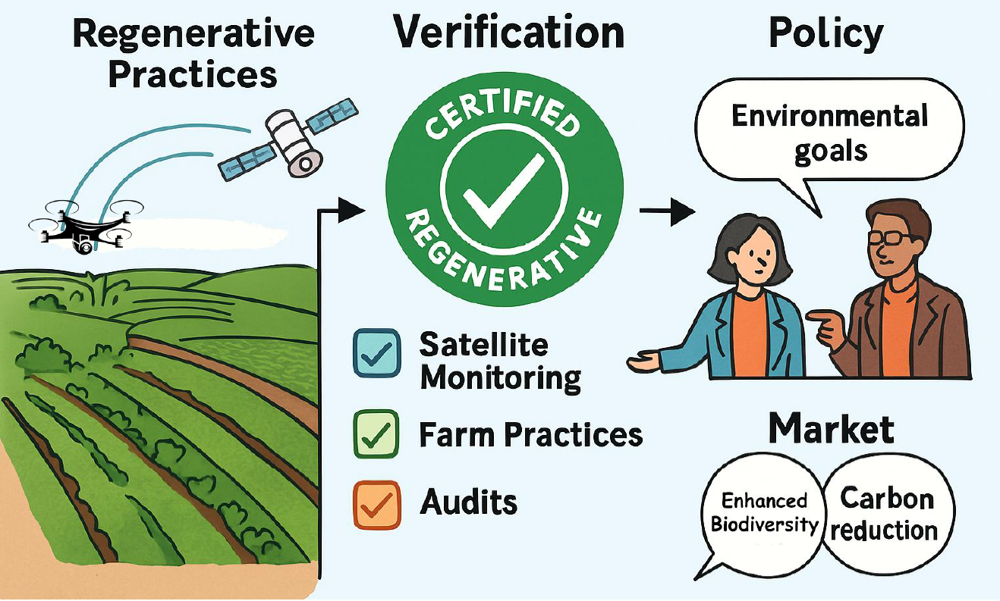
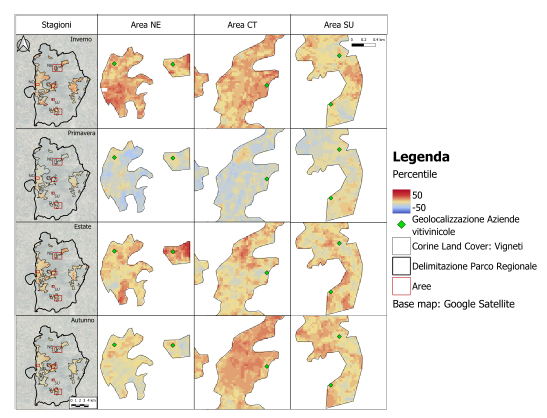
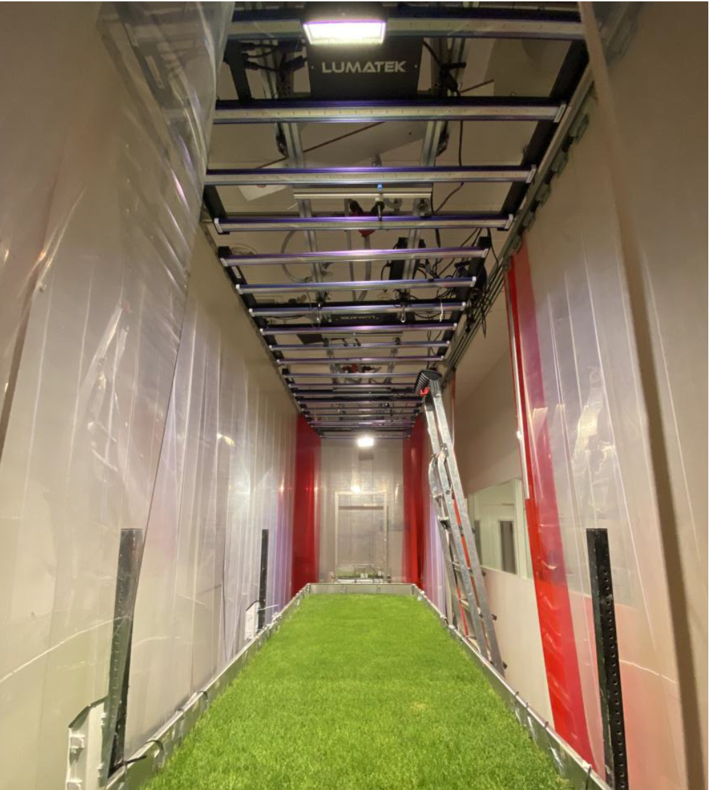

Presentations, posters and invited talks
The document links below open the source PDF in a preview window. They are intended for viewing rather than direct download.
PDF previewing is temporarily disabled on the site. Files remain in Conferences posters/ and will be enabled for in-page preview later.
ASITA 2026
Desktop GUI pipelines for Sentinel-1 and Sentinel-2 processing as Cloud-Optimised GeoTIFFs, accepted in the session "New sensors, platforms and products in remote sensing."

GIS Day 2025
Geospatial science and environmental monitoring themes.
Poster available: Enrico_GISday2025_poster.pdf

SIFET 2025
Vineyard productivity anomalies from Landsat LST data.
Paper available: Convegno_SIFET_Brindisi_Paper__giovani_autori.pdf
CIRGEO Summer School 2025
Presented a seminar on Thermal Remote Sensing for detecting vegetation anomalies — from satellites to drones — and supervised Assignment D: Remote Sensing and Environmental Modelling Challenge.
ASITA 2024
Research on new sensors, platforms and products in remote sensing.
GIS Day 2024
Geospatial workflows and environmental monitoring applications.
Presentation available: Magazzino_Enrico_GISday_2024.pdf

NWO Life 2023
Presentation on dryland vegetation pattern formation and remote sensing analysis.
Presentation available: NWOLife_presentation.pdf